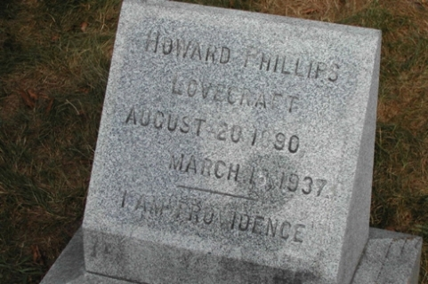

Смерть
Узнав о кончине друга, который выстрелил себе в рот из пистолета, Говард не мог прийти в себя. В конечном итоге он перестал употреблять пищу, ибо у него обнаружили рак кишечника. Лавкрафт умер 15 марта 1937 года в родном Провиденсе, пережив Роберта Говарда на девять месяцев.
Могила Говарда Лавкрафта
Впоследствии произведения писателя часто брались в основу различных фильмов и мультфильмов, а самому Говарду хотели возвести памятник в Провиденсе.